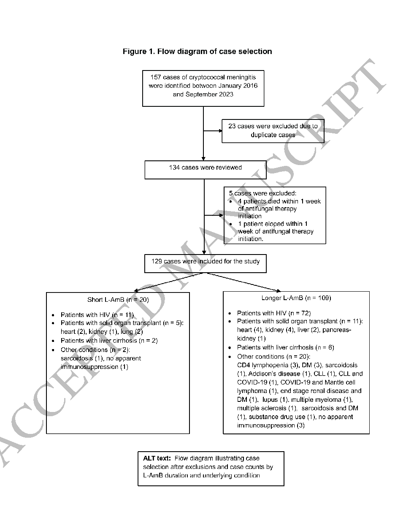

本ページで使用する略語一覧
| 略語 | 正式名称 — 日本語訳 |
| CM | Cryptococcal Meningitis — クリプトコッカス髄膜炎 |
| L-AmB | Liposomal Amphotericin B — リポソーマルアンフォテリシンB |
| GOS | Glasgow Outcome Scale — グラスゴー転帰スケール（退院時機能予後） |
| GCS | Glasgow Coma Scale — グラスゴー昏睡スケール |
| CrAg | Cryptococcal Antigen — クリプトコッカス抗原（CSF・血清で測定） |
| CSF | Cerebrospinal Fluid — 脳脊髄液 |
| OP | Opening Pressure — 脊髄液初期圧（cm H₂O） |
| AKI | Acute Kidney Injury — 急性腎障害（KDIGO基準） |
| SOT | Solid Organ Transplantation — 固形臓器移植 |
| NHNT | Non-HIV Non-Transplant — 非HIV・非移植患者 |
| ART | Antiretroviral Therapy — 抗レトロウイルス療法 |
| CCI | Charlson Comorbidity Index — 併存疾患重症度スコア |
| LOS | Length of Hospital Stay — 入院期間 |
| EFA | Early Fungicidal Activity — 早期殺菌活性 |
| IRIS | Immune Reconstitution Inflammatory Syndrome — 免疫再構築症候群 |
| PIIRS | Post-Infectious Immune Response Syndrome — 感染後免疫反応症候群 |
| VP shunt | Ventriculoperitoneal Shunt — 脳室腹腔シャント |
| OR / aOR | Odds Ratio / Adjusted Odds Ratio — オッズ比 / 調整オッズ比 |
| CI | Confidence Interval — 信頼区間 |
| ESLD | End-Stage Liver Disease — 末期肝疾患 |
SECTION 1 クリプトコッカス髄膜炎とL-AmB投与期間の問題
CMの疫学的変遷：HIVから非HIVへのシフト
クリプトコッカス症はHIV流行期（1980〜90年代）に急増し、その後のART普及によってHIV患者での有病率は低下した。しかし近年、免疫抑制薬を使用する非HIV免疫不全患者（固形臓器移植・肝硬変・その他）でのCM発症が増加しており、米国・オーストラリア・ニュージーランドの一部施設ではすでにHIVを上回っている。WHO（2022年）はクリプトコッカス属をCritical Fungal Priority Pathogenに指定した。
CMの管理は3つの柱からなる：①クリプトコッカスを根絶する抗真菌療法、②頭蓋内圧亢進のコントロール、③患者の免疫状態に応じた免疫調節（IRISやPIIRS では免疫抑制療法が必要になることもある）。
L-AmBの臨床的位置づけ：資源豊富な国での標準療法
AmBデオキシコレート（AmB-d）と比較して、L-AmBは腎毒性の軽減・輸液関連反応の減少・殺菌効果の改善を示している。資源豊富な国では、HIV・非HIV患者ともに、L-AmB 3〜4 mg/kg/日 + フルシトシン（100 mg/kg/日）の2週間投与が標準的な導入療法である（IDSA 2010ガイドライン）。
資源限定国での試験が示す「短期化」の可能性
アフリカで実施されたACTAランダム化試験では、AmB-d 1週間投与と2週間投与で死亡率が同等であった。さらにAMBITION-cmランダム化試験では、L-AmB 単回10 mg/kg投与（+フルシトシン+フルコナゾール）が2018年WHO推奨レジメンに非劣性であることが示され、HIV関連CMの第一選択に採用された。
一方でこれらの知見が資源豊富な国の日常診療に広く採用されていない理由として、①比較対象が資源豊富国の標準療法ではないこと、②フルコナゾール高用量（1,200 mg/日）が移植患者（CNI相互作用）や肝硬変患者（肝毒性懸念）に障壁となること、が挙げられている。
本研究の問い：米国での短期L-AmBは長期投与と同等か？
本研究は、資源豊富な国（米国・ヒューストン広域圏の14病院）での実臨床データを用いて、L-AmB導入療法の短期投与（≤1週間）と長期投与（>1週間）の臨床アウトカムを後ろ向きに比較した。主要アウトカムとして退院時GOS（機能予後）・院内死亡・90日全原因再入院を設定した。コホートにはHIV・SOT・肝硬変・その他の多様な背景が含まれ、実臨床の状況を反映している。
SECTION 2 研究方法
研究デザインと対象
後ろ向き観察コホート研究。ヒューストン広域圏の14病院で、2016年1月〜2023年9月に18歳以上でCMと診断された患者を対象とした。CM診断はCSF培養・CSF CrAg陽性・インクステインいずれかの陽性で定義。重複例（同一患者の2回目以降）は除外し、初回エピソードのみ採用した。
時間依存性バイアスの回避：抗真菌薬（種類問わず）を7日以上継続した患者のみを解析対象とした。これにより、L-AmB投与期間とアウトカムの関連が真の効果を反映するよう設計されている。
主要アウトカム・曝露・共変量の定義
| 項目 | 定義 |
|---|---|
| 曝露 L-AmB投与期間 | 短期：≤7日間 vs 長期：>7日間 |
| 主要アウトカム① GOS | 退院時Glasgow Outcome Scaleを不良（GOS 1〜4）/ 良好（GOS 5＝良好回復）に二値化。GOS 1=死亡、2=植物状態、3=重度障害、4=中等度障害 |
| 主要アウトカム② 院内死亡 | 入院中死亡（例数少数のため多変量解析は行わず） |
| 主要アウトカム③ 90日再入院 | 退院後90日以内の全原因再入院 |
| AKI定義 | KDIGO診断基準による |
多変量ロジスティック回帰では年齢・性別・人種・基礎疾患・L-AmB投与期間・CSF CrAg・二変量解析で有意だった変数を調整した。傾向スコア調整感度分析も実施。
SECTION 3 患者選択と基礎特性の比較（Figure 1 · Table 1）
Figure 1. 症例選択フローダイアグラム

2016年1月〜2023年9月に同定された157例のCMから、重複例23例と7日未満の抗真菌療法症例5例（死亡4例・自己退院1例）を除外し、最終的に129例を解析。短期L-AmB群（n=20）は HIV 11例・SOT 5例・肝硬変 2例・その他 2例、長期L-AmB群（n=109）は HIV 72例・SOT 11例・肝硬変 6例・その他 20例。
略語：L-AmB, liposomal amphotericin B; DM, diabetes mellitus; CLL, chronic lymphocytic leukemia
短期群は長期群と比較してベースラインの重症度が低い
短期L-AmB群（n=20）は全体的にベースラインの病態が軽く、臨床医が「比較的軽症の患者に短期投与を選択した」可能性と、「AKI等の毒性が現れた際にL-AmBを早期に中断した」可能性の両方が考えられる。
| 特性 | 短期 ≤1週間 (n=20) |
長期 >1週間 (n=109) |
P値 |
|---|---|---|---|
| L-AmB投与日数（中央値） | 4日（0.5〜6） | 14日（14〜16） | — |
| HIV | 55.0% | 66.1% | 0.25 |
| SOT | 25.0% | 10.1% | （同上） |
| 肝硬変 | 10.0% | 5.5% | （同上） |
| CCI（中央値） | 5.5 | 6.0 | 0.16 |
| GCS = 15 | 89.5% | 60.6% | 0.008 |
| CSF CrAg titer（中央値） | 1:40 | 1:640 | <0.001 |
| 血清 CrAg titer（中央値） | 1:160 | 1:1,280 | 0.02 |
| CSF培養陽性 | 40.0% | 74.3% | 0.003 |
| CSFグラム染色陽性 | 10.5% | 39.3% | 0.009 |
| 悪心・嘔吐 | 10.0% | 47.7% | <0.001 |
| AKI | 65.0% | 59.0% | 0.6（有意差なし） |
| ICU入室 | 10.0% | 27.5% | 0.07 |
| 敗血症性ショック | 5.0% | 15.0% | 0.19 |
短期群では髄液初期圧（OP）・CSF WBC・CSFタンパク・血液培養陽性率など、他の主要特性に有意差はなかった（すべてP≥0.05）。投与レジメンも両群でほぼ同等で、ほぼ全例（98%）でL-AmB 3 mg/kg/日が使用され、約90%でL-AmB+フルシトシンの併用療法が行われた。
SECTION 4 主要アウトカムの比較
3つの主要アウトカムに有意差なし・入院期間のみ短縮
短期L-AmB群と長期L-AmB群を比較したところ、いずれの主要アウトカムにも統計学的有意差は認められなかった。短期群では転帰良好の傾向がみられたが、サンプル数が少なく有意差には至らなかった。唯一、入院期間（LOS）は短期群で有意に短く、資源利用の観点から短期投与の利点が示唆された。
vs 61.5%（長期群）
vs 5.5%（長期群）
vs 38.5%（長期群）
| アウトカム | 短期群（n=20） | 長期群（n=109） | P値 |
|---|---|---|---|
| 退院時GOS（不良：GOS 1〜4 / 良好：GOS 5） | |||
| GOS不良（合計） | 50.0% | 61.5% | 0.34 |
| GOS 1（死亡） | 5.0% | 4.6% | — |
| GOS 2（植物状態） | 0% | 6.4% | — |
| GOS 3（重度障害） | 25.0% | 32.1% | — |
| GOS 4（中等度障害） | 20.0% | 18.3% | — |
| GOS 5（良好回復） | 50.0% | 38.5% | — |
| 院内死亡 | 5.0% | 5.5% | 0.93 |
| 90日再入院 | 25.0% | 38.5% | 0.24 |
| 入院期間（LOS）中央値 | 11日 | 20日 | <0.001 |
SECTION 5 多変量解析：転帰不良GOS・90日再入院の独立予測因子
退院時GOS不良の独立予測因子（多変量解析）
多変量ロジスティック回帰において、以下の3因子が退院時GOS不良と独立して関連していた。L-AmB投与期間は有意な独立予測因子ではなかった（長期投与のaOR 2.40、P=0.29）。傾向スコア調整感度分析でもL-AmB投与期間と退院時GOS不良の関連は有意ではなく（長期投与OR 1.26、P=0.70）、結果は一貫していた。
| 変数 | 調整OR（95% CI） | P値 | 解釈 |
|---|---|---|---|
| CSF CrAg > 1:320 | aOR 3.37（1.02〜11.12） | 0.046 | 高菌量→GOS不良リスク3.4倍 |
| AKI合併 | aOR 3.36（1.15〜9.84） | 0.03 | AKI→GOS不良リスク3.4倍 |
| 羞明（photophobia）あり | aOR 0.21（0.04〜0.99） | 0.049 | 羞明あり→良好転帰（保護因子） |
| 長期L-AmB投与 | aOR 2.40（0.47〜12.26） | 0.29（有意差なし） | 投与期間はGOSと独立関連なし |
| その他の基礎疾患 HIV比較 |
aOR 6.02（1.07〜33.70） | 0.046 | 非HIV・非移植・非肝硬変→不良転帰リスク高 |
90日再入院の多変量解析
主要解析では長期L-AmB投与が90日再入院と有意に関連していた（aOR 4.53、P=0.048）。しかし傾向スコア調整感度分析ではこの関連は有意ではなく（OR 2.43、P=0.2）、方向性は一致するものの結果は不安定であった。著者らはサンプルサイズの小ささから、この知見の解釈には慎重さが必要と述べている。
基礎疾患別では、HIV患者と比較してSOT（aOR 4.22、P≥0.05）・肝硬変（aOR 3.35、P≥0.05）・その他（aOR 1.69、P≥0.05）でいずれも90日再入院のORが高い傾向があったが、統計的有意差には至らなかった。
SECTION 6 考察・臨床的意義・研究の限界
L-AmB短期投与の位置づけ：選択バイアスと腎毒性への対応
本研究で短期群がベースラインで軽症であったことは、臨床医がより良好なベースラインプロファイルをもつ患者に短期投与を選択したこと、およびAKI等のL-AmB毒性が出現した際に早期中断を行ったことの両方を反映している可能性がある。実際、短期群ではAKIが65.0%と長期群（59.0%）より数値上多く、AKI発症がL-AmB中断のトリガーになった例が含まれると推測される。傾向スコア調整解析でもGOSに関してL-AmB期間の有意な関連は消失しており、投与期間そのものよりも患者背景のほうがアウトカムの規定因子である可能性が高い。
SOT・ESLD・非HIV非移植患者：より高いリスク群への対応
本研究でHIV以外の基礎疾患（特に「その他」カテゴリー）はGOS不良と有意に関連していた（aOR 6.02）。先行研究では肝硬変患者のクリプトコッカス症死亡率は75〜80%に達するという報告があり、本コホートも非HIV患者でより不良な傾向を示した（有意差なし）。ART普及以降、肝硬変が非HIV関連クリプトコッカス症の最大36%を占めるという疫学的変化を踏まえると、この患者群に特化した治療戦略の検討が急務である。
資源豊富な国での課題：2週間投与の再評価に向けて
本研究の著者らは、「少なくともベースライン特性が短期群と同等の選択集団においては、L-AmB 1週間以下の導入療法が長期投与と同等のアウトカムをもたらす可能性がある」と結論づけている。従来の「最低2週間投与」のパラダイムは、資源豊富な国においても再評価の余地があると提唱している。Phase II試験・多施設Phase III試験による確認が今後必要とされている。
またフルシトシンの使用が転帰改善と関連することが複数の試験で示されており、パートナー薬の選択（フルシトシン vs フルコナゾール）も治療戦略上の重要事項と位置づけられている。
研究の限界
①短期群のサンプル数が少なく（n=20）、過小検出力（適合力不足）がある。②後ろ向き設計による選択バイアス・適応交絡（indication bias）が残存する。③外部病院での転帰（他院再入院・他院死亡）は捕捉できていない。④IRIS/PIIRS合併例では管理が通常のCMと異なる可能性があるが、今回は区別されていない。⑤多変量モデルに複数の共変量を含めたため過適合（overfitting）のリスクがある。
AMBITION-cm（NEJM 2022）が示したL-AmB単回10 mg/kg投与の有効性は、主にサハラ以南アフリカのHIV患者で実証されたものであり、資源豊富な国の複雑な基礎疾患を有する非HIV患者群への外挿には慎重さが求められる。本研究はそのギャップを埋る第一歩として位置づけられるが、小規模単施設後ろ向きデータという制約は大きい。Phase II→Phase IIIの系統的研究が必要な段階にある。
SUMMARY 本研究のキーメッセージ
出典：Park SO, Stack MA, Drake TC, Hasbun R, Ostrosky-Zeichner L. Cryptococcal Meningitis: Comparison of Short- (≤ 1 week) versus Longer-duration (> 1 week) Liposomal Amphotericin B Induction Therapy and Factors Associated with Clinical Outcomes in HIV and non-HIV patients. Open Forum Infect Dis. 2026. Accepted Manuscript.
DOI：https://doi.org/10.1093/ofid/ofag342
本資料は教育目的で作成したサマリーです。診断・治療方針の決定には必ず原典論文を参照してください。
制作：ICU 関谷